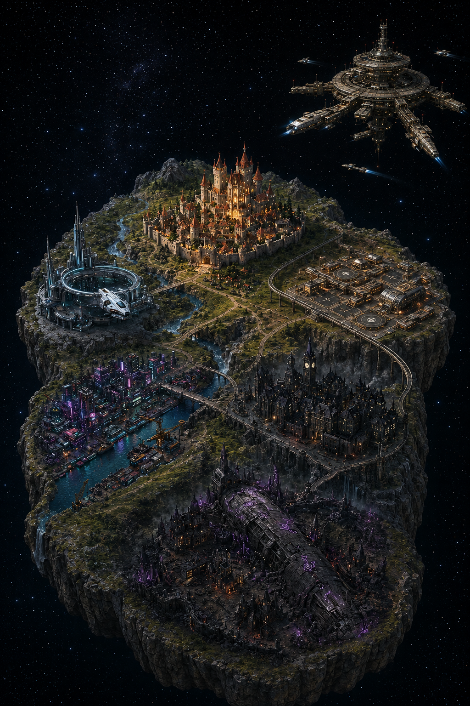

Campaign Codex is a deterministic rules engine built to hold more than one tabletop
universe. Pathfinder 1st Edition is live today — five more worlds are already on the map.

Pathfinder 1st Edition*Starfinder 1st Edition*SOONTraveller*SOONCyberpunk Red*SOONWorld of Darkness*SOONSolarus ArcanumSOON
Campaign Codex computes your Pathfinder 1st Edition character deterministically —
every bonus, save, and prerequisite traces back to the exact rule that produced it.
No black box, no eyeballed math, no guessing at the table.
A rules engine first, a character sheet second — built so the numbers are never a mystery.
Rules you can verify
Every computed value traces to the source text that produced it. If the engine can't back a number with a rule, it says so instead of guessing.
Built from the real rulebooks
Codex parses the actual Pathfinder 1e sourcebook data — not a hand-typed approximation — into a structured, queryable corpus. Pathfinder is the first universe; the same engine is built to seat other tabletop systems, sci-fi included.
Free, open, and yours
Source code is MIT-licensed; the game rule data ships under its own license per book
(OGL, CC, or ORC) — see the licensing breakdown below. No subscription, no telemetry.
Release 1 adds a GM's toolbox and a campaign mode so your table can share content over
your own Google Drive.
What you can do
Everything a table actually needs, not an engineering demo.
Build a character
Walk through race, class, feats, and gear against the real Pathfinder 1e ruleset — no flipping between three books to check if a choice is legal.
Save and load
Every character is saved to your own disk. Close the app, come back next session, and pick up exactly where you left off.
Every detail calculated
Attack bonuses, saves, skills, AC — every number on the sheet is computed for you and traces back to the rule that produced it.
Print for the table
Get a clean, ready-to-print character sheet for whenever you'd rather have paper in front of you than a screen.
Share with your table
Campaign mode lets everyone in your group share characters and campaign content with each other over your own Google Drive.
DM Toolkit
Build encounters and keep session notes in the same place you're running the game, instead of a pile of scattered documents.
Early access
Campaign Codex is under active development. Today, the fully reliable path is a
single-class Fighter, levels 1–3, any race — every other combination
returns an honest "not yet supported" instead of a fabricated number. New classes and
levels land every release.
Active development happens on Linux — that's the platform every change is proven
against first. Every push also auto-publishes alpha builds for Linux, macOS, and
Windows, so you don't need a toolchain just to try the app.
Download a build
These are alpha builds, published automatically from the latest code — expect rough
edges. Grab the newest alpha-vX.Y.Z release from
the releases page.
Platform
Linux
macOS
Windows
Download
Grab the .AppImage (portable, no install) or the .deb (Debian/Ubuntu).
Grab the .dmg.
Apple Silicon (M-series) only for now — Intel Mac builds haven't landed yet.
Grab the .msi or the .exe installer.
Run it
chmod +x Codex_*.AppImage
./Codex_*.AppImage
Or with the .deb:
sudo apt install ./Codex_*_amd64.deb
Open the .dmg and drag Codex into Applications, same as any Mac app.
Run the .msi or .exe and follow the installer.
Build from source
Only needed if you're developing against Codex, not just running it. Five steps from a
clean machine to a locally built binary.
License (game rules data): Not MIT-licensed. Each dataset carries its own license — Open Game License v1.0a, Creative Commons, or ORC. See LICENSING.md for full attribution obligations.
Trademarks: see the full breakdown below.
For developers
Everything below is engineering detail, not required reading for players.
Project status — real-vs-stubbed state, coverage, in-flight work
Release docs — every SD-N bundle, including release notes
Issue tracker — bug reports and enhancement requests
Third-party trademarks
Campaign Codex is an independent, unofficial project. The systems below are named on the
multiverse map above to describe planned support; naming them is not a claim of
affiliation or endorsement.
Pathfinder and Starfinder are trademarks of Paizo Inc. Campaign Codex is not affiliated with or endorsed by Paizo.
Traveller is a trademark of Far Future Enterprises, published under license by Mongoose Publishing. Campaign Codex is not affiliated with or endorsed by Far Future Enterprises or Mongoose Publishing.
Cyberpunk RED is a trademark of R. Talsorian Games, Inc. Campaign Codex is not affiliated with or endorsed by R. Talsorian Games.
World of Darkness is a trademark of Paradox Interactive AB. Campaign Codex is not affiliated with or endorsed by Paradox Interactive or White Wolf Entertainment.
Solarus Arcanum carries no asterisk on the map above — it's an original Campaign Codex setting, not a third-party system.